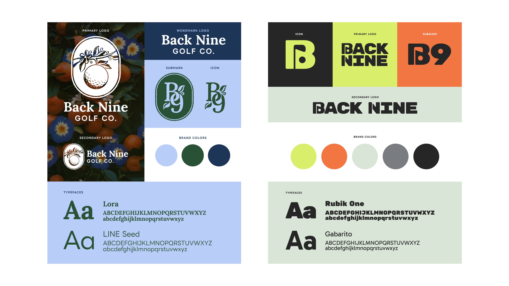
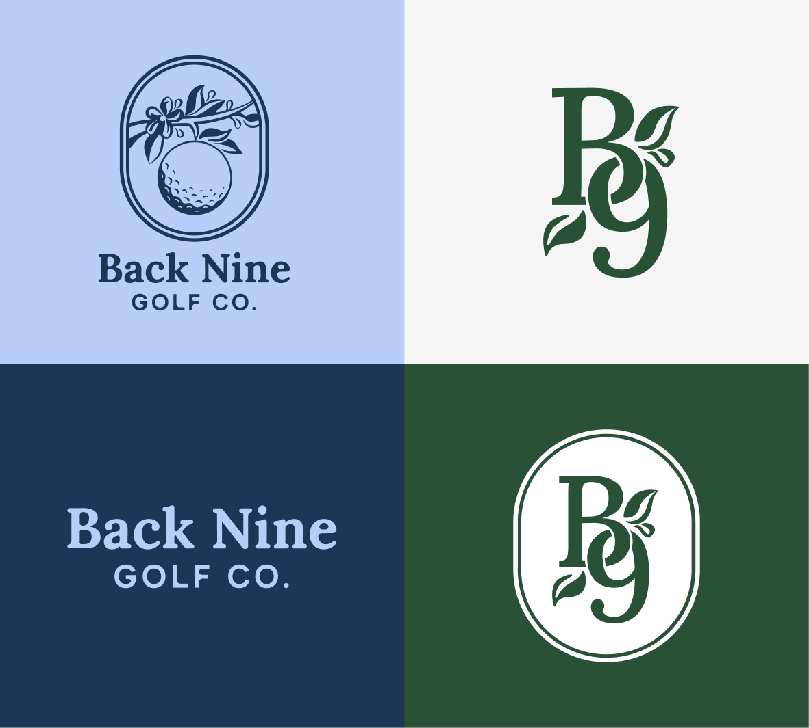
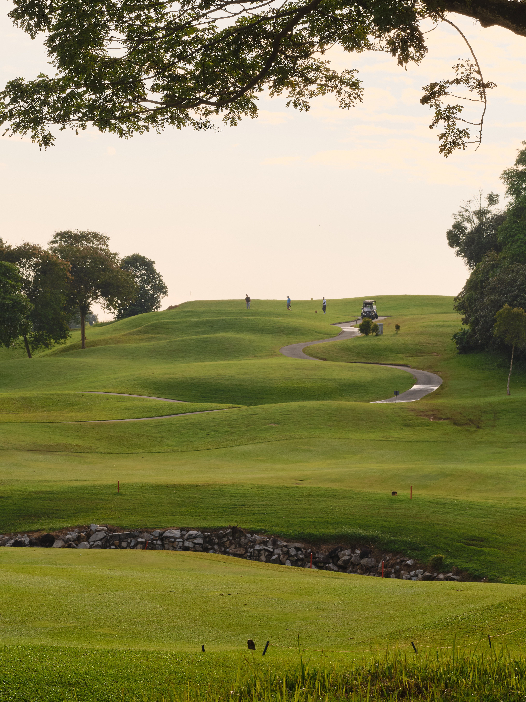

Back Nine Golf Co.
Back Nine Golf Co. is a Florida-based golf apparel brand built on a simple idea: golf should feel welcoming to everyone. I developed the complete brand identity from the ground up — logo system, color palette, typography, and a full set of brand guidelines covering everything from embroidery specs to social media direction.


Process
Every good brand starts with a clear point of view. For Back Nine Golf Co., that meant zeroing in on what makes the brand different: a welcoming, down-to-earth alternative to the exclusivity that golf culture is known for. Moodboarding, competitive research, and a lot of conversations about what this brand should feel like laid the groundwork for everything that followed.
I started with two moodboards, and developed two sample brands from there. The owners were unsure which direction to take, wanting to reference their Florida heritage but also keep the brand cool. After presenting the two versions, they chose the one on the left with a greater nod towards Florida's natural history.

Logo suite
The logo system was built to work hard across every application, from a full-bleed brand guide cover to a quarter-inch hat embroidery. The primary mark pairs a golf ball with a citrus branch inside an oval badge, giving the brand that classic Florida feel. Every variation has a job to do, with icons and submarks being designed for the smallest applications.

Brand colors
Typography


Building the brand
The brand system was then applied across a full range of various executions. Specs for shirts, polos, and hats were created for printing future merch. Social media was planned alongside the owners, and looking at competitors to best set ourselves apart. Imagery was chosen to be used in future executions, showing off the beautiful and natural Florida landscape these golfers call home. The goal with every execution was to make it attainable for the average golfer, while still having that high-end feel.

